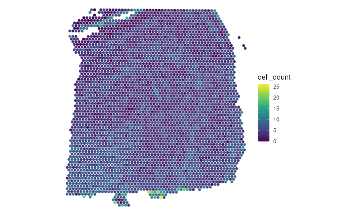
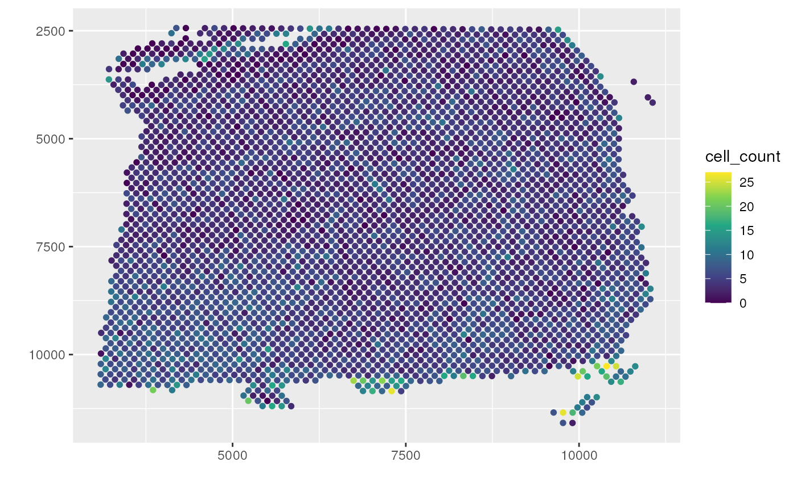

Create Multi-dimensional Plot of Spatially-resolved Transcriptomics Data
Boyi Guo
Johns Hopkins Bloomberg School of Public Health, Baltimore, MD, USAStephanie C. Hicks
Johns Hopkins Bloomberg School of Public Health, Baltimore, MD, USASource:
vignettes/SRT_eg.Rmd
SRT_eg.RmdIntroduction
The goal of escheR is to create an unified multi-dimensional spatial visualizations for spatially-resolved transcriptomics data following Gestalt principles.
Our preprint describing the innovative visualization is available from bioRxiv.
Installation
You can install the latest release version of escheR
from Bioconductor. with using the following code will install version of
the nnSVG package from Bioconductor. Additional details are
shown on the Bioconductor
page.
if (!require("BiocManager", quietly = TRUE)) {
install.packages("BiocManager")
}
BiocManager::install("escheR")The latest development version can also be installed from the
devel version of Bioconductor or from GitHub following
if (!require("devtools")) install.packages("devtools")
devtools::install_github("boyiguo1/escheR")Input data format
In the examples below, we assume the input data are provided as a SpatialExperiment
Bioconductor object. For people whose data are stored as a Seurat
object, we advise to convert to a SpatialExperiment object
before applying the workflow below.
Tutorial
Load Packages
To run the demonstration, there are two necessary packages to load,
escheR and STexampleData. STexampleData
contains a pre-processed 10x Visium dataset.
To note, escheR will automatically load
ggplot2 package. Hence, explicitly loading
ggplot2 is not required.
Preparing example data
In this step, we will find one 10xVisium sample from STexampleData
package, indexed by brain number of “151673”. For more information,
please see the vignettes of STexampleData.
spe <- Visium_humanDLPFC()
# Subset in-tissue spots
spe <- spe[, spe$in_tissue == 1]Here is a summary of the SpatialExperiment object called
spe.
spe
#> class: SpatialExperiment
#> dim: 33538 3639
#> metadata(0):
#> assays(1): counts
#> rownames(33538): ENSG00000243485 ENSG00000237613 ... ENSG00000277475
#> ENSG00000268674
#> rowData names(3): gene_id gene_name feature_type
#> colnames(3639): AAACAAGTATCTCCCA-1 AAACAATCTACTAGCA-1 ...
#> TTGTTTGTATTACACG-1 TTGTTTGTGTAAATTC-1
#> colData names(7): barcode_id sample_id ... ground_truth cell_count
#> reducedDimNames(0):
#> mainExpName: NULL
#> altExpNames(0):
#> spatialCoords names(2) : pxl_col_in_fullres pxl_row_in_fullres
#> imgData names(4): sample_id image_id data scaleFactorSetting up for escheR plot
Similar to ggplot2::ggplot(), we first use the function
make_escheR() to create an empty plot. The input of
make_escheR() is a SpatialExperiment
object. The output of the function is a ggplot object with
no layer in it.
p <- make_escheR(spe)Adding layers
Unlike ggplot2, we use piping |> instead
of + to apply layers the figure. Mainly, we have three
functions add_fill, add_ground,
add_symbol. The inputs of these add_*
functions include the plots created using make_scheR() and
the variable name for the layer. Currently, the variable name should be
in the the column data of the spe object,
i.e. colData(spe).
Here we first apply the add_fill to add the spots
color-coded by the total number of cells all
spots(sum_umi).
(p1 <- p |>
add_fill(var = "cell_count"))
p1 +
scale_fill_viridis_c()
It is okay to use any combination of the add_*
functions. For example, we want to show the spatial domains of the
samples as the ground of the figure and use symbols to denote if each
spot is within the outline of the tissue slice. In this example, all
plotted spots are in the outlines of the tissue slice and hence marked
with dots.
(p2 <- p |>
add_ground(var = "ground_truth")) # round layer
p2 |>
add_symbol(var = "ground_truth", size = 0.2) # Symbol layer
#> Warning: The shape palette can deal with a maximum of 6 discrete values because
#> more than 6 becomes difficult to discriminate; you have 7. Consider
#> specifying shapes manually if you must have them.
#> Warning: Removed 541 rows containing missing values (`geom_point()`).
It is okay to change the ordering of these add_*
functions. However, we advise to always have the add_fill
as the first step to achieve the best visual effect due to the laying
mechanism.
Adjusting aesthetics
To change the aesthetics of each layer, one can simply use the
scale_* from ggplot2 to optimize the final
visual presentation. For example, to optimize add_fill, one
can use scale_fill_*; to optimize add_ground,
one can use scale_color_*; to optimize
add_sumbol, one use scale_shape_*. Here, we
demonstrate how to change the color for the ground layer (
add_ground) using scale_color_manual.
p2 +
scale_color_manual(
name = "", # No legend name
values = c(
"Layer1" = "#F0027F",
"Layer2" = "#377EB8",
"Layer3" = "#4DAF4A",
"Layer4" = "#984EA3",
"Layer5" = "#FFD700",
"Layer6" = "#FF7F00",
"WM" = "#1A1A1A",
"NA" = "transparent")
) +
labs(title = "Example Title")
Session information
sessionInfo()
#> R version 4.3.0 (2023-04-21)
#> Platform: x86_64-pc-linux-gnu (64-bit)
#> Running under: Ubuntu 22.04.2 LTS
#>
#> Matrix products: default
#> BLAS: /usr/lib/x86_64-linux-gnu/openblas-pthread/libblas.so.3
#> LAPACK: /usr/lib/x86_64-linux-gnu/openblas-pthread/libopenblasp-r0.3.20.so; LAPACK version 3.10.0
#>
#> locale:
#> [1] LC_CTYPE=en_US.UTF-8 LC_NUMERIC=C
#> [3] LC_TIME=en_US.UTF-8 LC_COLLATE=en_US.UTF-8
#> [5] LC_MONETARY=en_US.UTF-8 LC_MESSAGES=en_US.UTF-8
#> [7] LC_PAPER=en_US.UTF-8 LC_NAME=C
#> [9] LC_ADDRESS=C LC_TELEPHONE=C
#> [11] LC_MEASUREMENT=en_US.UTF-8 LC_IDENTIFICATION=C
#>
#> time zone: UTC
#> tzcode source: system (glibc)
#>
#> attached base packages:
#> [1] stats4 stats graphics grDevices utils datasets methods
#> [8] base
#>
#> other attached packages:
#> [1] STexampleData_1.8.0 SpatialExperiment_1.10.0
#> [3] SingleCellExperiment_1.22.0 SummarizedExperiment_1.30.1
#> [5] Biobase_2.60.0 GenomicRanges_1.52.0
#> [7] GenomeInfoDb_1.36.0 IRanges_2.34.0
#> [9] S4Vectors_0.38.1 MatrixGenerics_1.12.0
#> [11] matrixStats_0.63.0 ExperimentHub_2.8.0
#> [13] AnnotationHub_3.8.0 BiocFileCache_2.8.0
#> [15] dbplyr_2.3.2 BiocGenerics_0.46.0
#> [17] escheR_1.1.1 ggplot2_3.4.2
#> [19] BiocStyle_2.28.0
#>
#> loaded via a namespace (and not attached):
#> [1] DBI_1.1.3 bitops_1.0-7
#> [3] rlang_1.1.1 magrittr_2.0.3
#> [5] compiler_4.3.0 RSQLite_2.3.1
#> [7] DelayedMatrixStats_1.22.0 png_0.1-8
#> [9] systemfonts_1.0.4 vctrs_0.6.2
#> [11] stringr_1.5.0 pkgconfig_2.0.3
#> [13] crayon_1.5.2 fastmap_1.1.1
#> [15] ellipsis_0.3.2 magick_2.7.4
#> [17] XVector_0.40.0 labeling_0.4.2
#> [19] scuttle_1.10.1 utf8_1.2.3
#> [21] promises_1.2.0.1 rmarkdown_2.21
#> [23] ragg_1.2.5 purrr_1.0.1
#> [25] bit_4.0.5 xfun_0.39
#> [27] zlibbioc_1.46.0 cachem_1.0.8
#> [29] beachmat_2.16.0 jsonlite_1.8.4
#> [31] blob_1.2.4 highr_0.10
#> [33] later_1.3.1 rhdf5filters_1.12.1
#> [35] DelayedArray_0.26.2 interactiveDisplayBase_1.38.0
#> [37] Rhdf5lib_1.22.0 BiocParallel_1.34.1
#> [39] parallel_4.3.0 R6_2.5.1
#> [41] bslib_0.4.2 stringi_1.7.12
#> [43] limma_3.56.1 jquerylib_0.1.4
#> [45] Rcpp_1.0.10 bookdown_0.34
#> [47] knitr_1.42 R.utils_2.12.2
#> [49] httpuv_1.6.10 Matrix_1.5-4
#> [51] tidyselect_1.2.0 yaml_2.3.7
#> [53] codetools_0.2-19 curl_5.0.0
#> [55] lattice_0.21-8 tibble_3.2.1
#> [57] KEGGREST_1.40.0 shiny_1.7.4
#> [59] withr_2.5.0 evaluate_0.21
#> [61] desc_1.4.2 Biostrings_2.68.0
#> [63] pillar_1.9.0 BiocManager_1.30.20
#> [65] filelock_1.0.2 generics_0.1.3
#> [67] rprojroot_2.0.3 RCurl_1.98-1.12
#> [69] BiocVersion_3.17.1 sparseMatrixStats_1.12.0
#> [71] munsell_0.5.0 scales_1.2.1
#> [73] xtable_1.8-4 glue_1.6.2
#> [75] tools_4.3.0 locfit_1.5-9.7
#> [77] fs_1.6.2 rhdf5_2.44.0
#> [79] grid_4.3.0 AnnotationDbi_1.62.1
#> [81] DropletUtils_1.20.0 edgeR_3.42.2
#> [83] colorspace_2.1-0 GenomeInfoDbData_1.2.10
#> [85] HDF5Array_1.28.1 cli_3.6.1
#> [87] rappdirs_0.3.3 textshaping_0.3.6
#> [89] fansi_1.0.4 viridisLite_0.4.2
#> [91] S4Arrays_1.0.1 dplyr_1.1.2
#> [93] gtable_0.3.3 R.methodsS3_1.8.2
#> [95] sass_0.4.6 digest_0.6.31
#> [97] dqrng_0.3.0 farver_2.1.1
#> [99] rjson_0.2.21 memoise_2.0.1
#> [101] htmltools_0.5.5 pkgdown_2.0.7
#> [103] R.oo_1.25.0 lifecycle_1.0.3
#> [105] httr_1.4.6 mime_0.12
#> [107] bit64_4.0.5